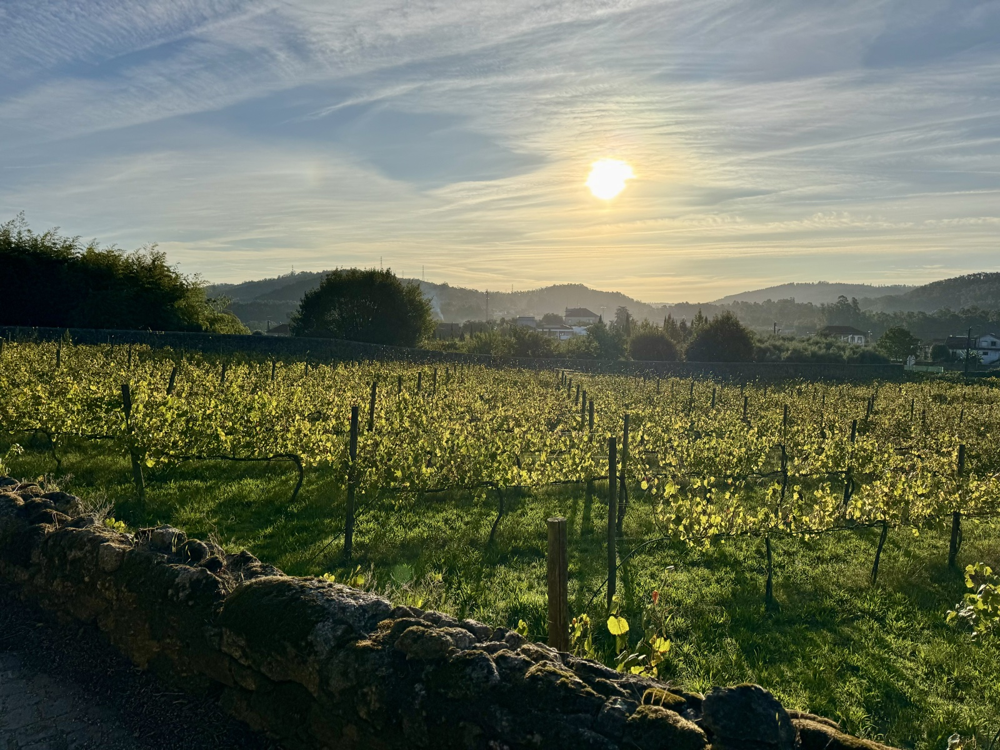
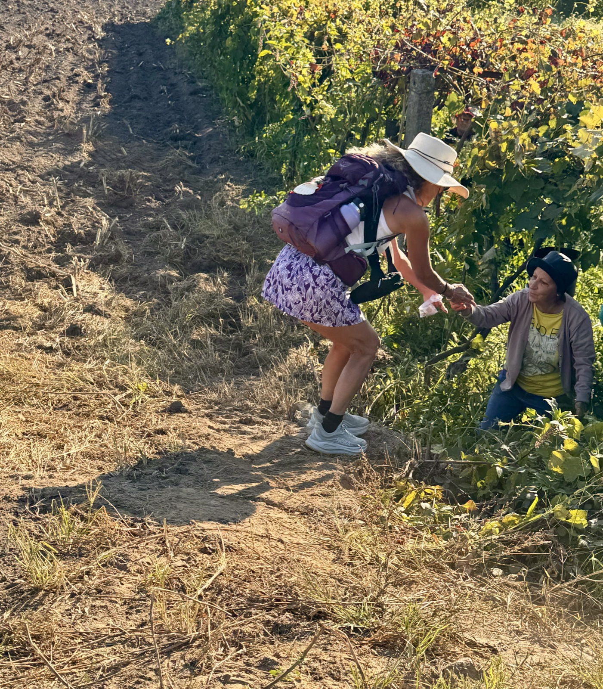
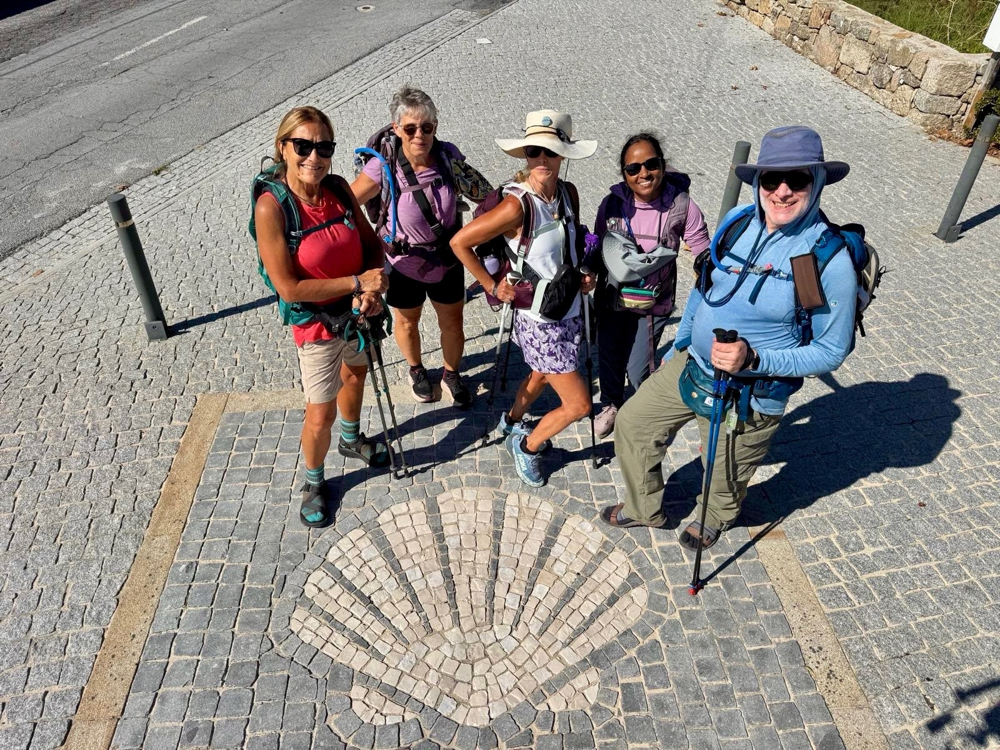

Stage 2: Arcos to Barcelos
Data: 13.32 miles, 2028 ft. elevation gain, 5 hours and 37 minutes.

Today we moved inland to the Camino Central Route with a variant up a mountain for fabulous views of the countryside. Plenty of dairy cows, chickens, roosters, and church bells, and dogs made for an informal and friendly rural atmosphere. Given the long day we had—the picture —the beauty made the physical challenge worthwhile and inspiring.


The churches stir me in many complex ways. I think of the more ornate cathedrals with more distain as I take in the excessive gold, silver, and painfully detailed carvings embedded in alters, walls, statues, and entryways. But then—I consider the number of trained, talented, and hardworking artists involved in the creation of these artful buildings. But disturbingly the gold was in so many cases stolen and pilfered from people of modest means or confiscated for power and prestige. The sculptors and painters were likely of modest means at best and they were able to create art lasting for centuries. Is this the good that resulted from horrific circumstances?

The smaller churches and chapels seem to be dwellings for the commoners—scant with decor but solid and purposeful for the neighborhood spiritual gatherings.
Our luncheon today was in a small town of Pedro Furarda. It was a Michelin rated restaurant run by two women well into their 70’s who told us what we should eat, watched us to be sure we liked our food, then insisted we take the leftovers with us on our hike. The codfish croquettes were delicious, but we were not successful in trekking them across the top of a mountain and another 6 miles into the next town. COD cakes in 80 plus degree humidity is not OSHA approved. Therefore, the coyotes will benefit.

Ironically, the most simple and awe inspiring alter was tucked away in a roadside hideaway with no cathedral ceiling or even a single wall to define its space. The alter was a simple yet wildly profound collection of items left by pilgrims for years…

We really pushed through the last three miles today. Miraculously I feel fine, but tired. The day was a total success ending in beautiful Barcelona with stunning topiary, symmetrical formal gardens, and a town square worthy of a royal entourage. After a light dinner and a glass of vino verde, Claire and I are settled in for the night.